CS184/284A Spring 2026 Homework 2 Write-Up
Link to webpage: https://cal-cs184-student.github.io/hw-webpages-umgop/hw2/index.html
Link to GitHub repository: https://cs184.eecs.berkeley.edu/sp26/

Overview
In this homework, I built a system to evaluate smooth surfaces and manipulate triangle meshes using the half-edge data structure. I started by using de Casteljau’s algorithm and linear interpolation to calculate points on curves and 3D Bezier surfaces. From there, I moved into mesh editing, implementing area-weighted vertex normals for smooth shading and creating operations like edge flips and edge splits to change the mesh connectivity. Finally, I combined these techniques to implement Loop Subdivision, which uses weighted averages and mesh upsampling to turn blocky shapes into smooth, high-resolution models.
Section I: Bezier Curves and Surfaces
Part 1: Bezier Curves using De Casteljau Recursive Method
De Casteljau’s algorithm is a way of calculating points on a smooth curve by using linear interpolation. The idea behind this method is to pick points on lines connecting the points on the curve, depending on a value called t, which varies from 0 to 1. After choosing points on the lines, we connect them and repeat the same process until we have only one point left. This one point represents the exact position of the curve for a certain value of t. This was achieved by creating a function that calculates points on the curve one level at a time until the curve has been fully evaluated.
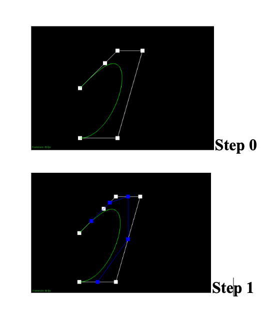
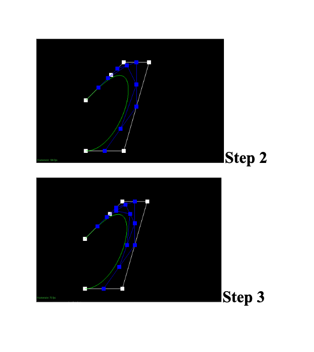
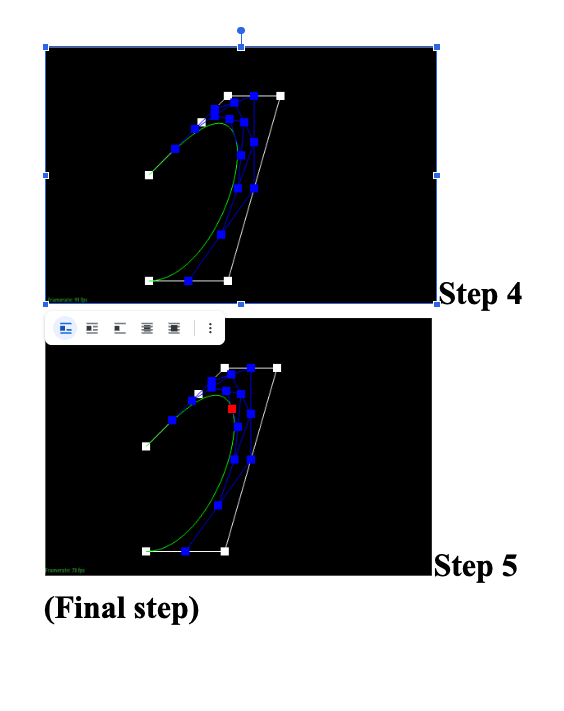
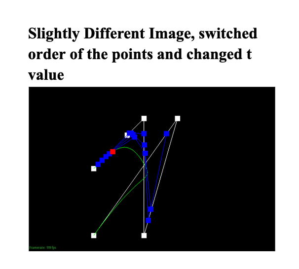
Part 2: Bezier Surfaces using Separable 1D De Casteljau
For the 3D surfaces, I decided to extend the 1D curve logic to two dimensions. This was achieved by considering the 3D grid of points as rows and applying the 1D curve logic to each row, depending on a horizontal parameter called u. This gave us points on a single vertical curve. I then ran the 1D algorithm one last time on that new vertical curve using a second parameter called v. The final point from that last step is a point on the 3D Bezier surface. My implementation simply reuses the 1D evaluation logic to handle this row-by-row and then column-by-column approach.
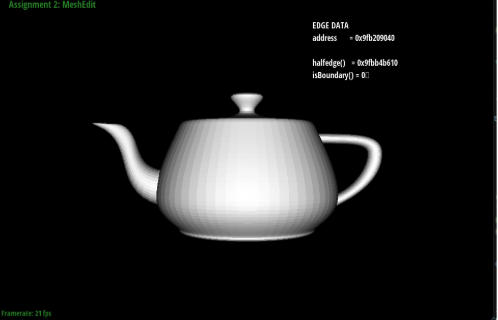
Section II: Triangle Meshes and Half-Edge Data Structure
Part 3: Area Weighted Vertex Normals
To obtain the smooth shading (Phong shading), I have used the concept of area-weighted vertex normals. Instead of the triangle looking flat, we want the corners of the triangle to have an orientation that averages out the triangles adjacent to it. Using the data structure of the half-edge, I have traversed the vertex so that all the triangles adjacent to the vertex are covered. I have then obtained the vector perpendicular to the surface of the triangle using the cross product. Since the magnitude of this vector is proportional to the area of the triangle, the larger triangles will have more weight. I have then summed all these vectors and normalized the resultant vector to one.
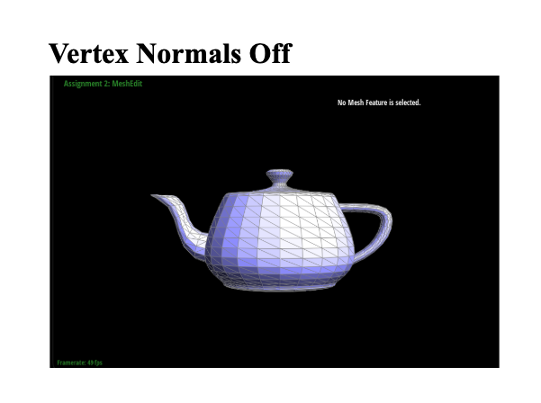
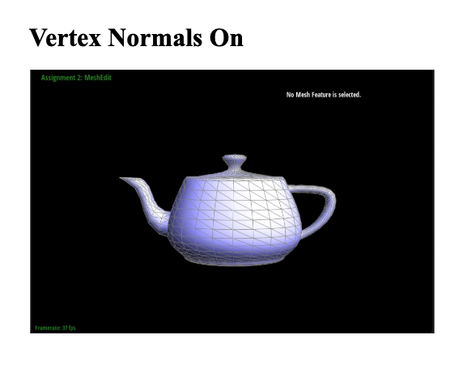
Part 4: Edge Flip Implementation
The edge flip operation involves taking the common edge of the two triangles and flipping it so that it joins the other two opposite corners. In order to implement this, I have had to be extremely careful with the mesh data structure. I have identified all the components of the operation, including the corners, the common edge, and the half-edges that connect these components. A great trick I used was drawing a "before and after" diagram on paper; if even one pointer is wrong, the mesh can disappear or turn black because the computer can't figure out which way the surface is facing.
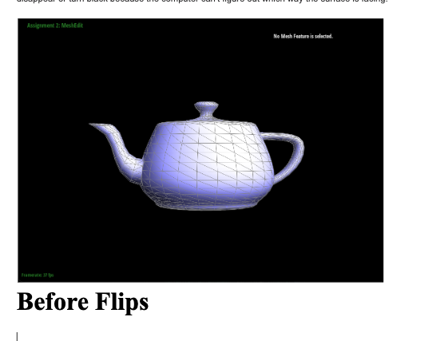
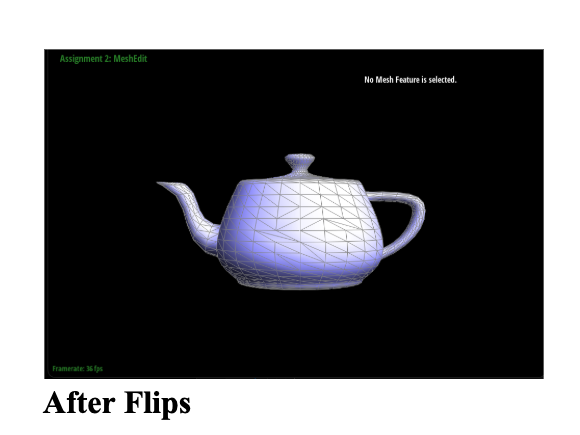
Part 5: Edge Split Implementation
When implementing edge splitting, it meant that an edge is taken and a new vertex is added exactly in the middle of it, and this vertex is connected to both opposite corners. This increases the number of triangles by two. This was a bit more involved than flipping because I had to create entirely new mesh components such as a vertex, three edges, and two faces. This involved implementing it by adding a new vertex exactly at the middle of an edge and adding new edges and faces to fill up the gaps. The challenge involved making sure that every single half edge, including the existing ones, has their "next" and "twin" pointers updated appropriately to include the new smaller triangles.
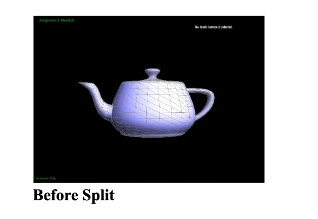
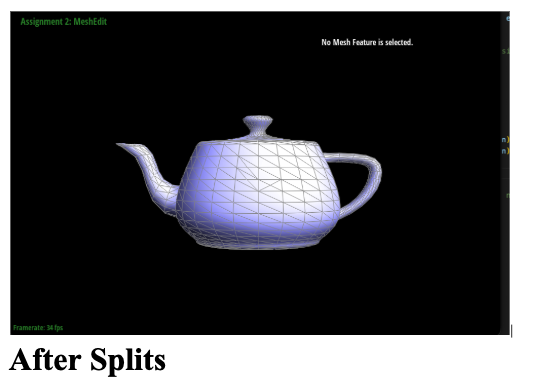
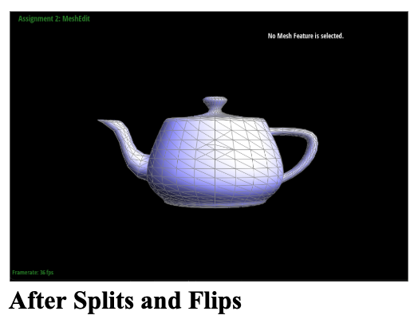
Part 6: Loop Subdivision for Mesh Upsampling
Loop subdivision is used to make a blocky mesh look smoother by adding more triangles and moving the vertices appropriately. This involved implementing it by a few steps. First, it involved calculating the new positions of existing vertices and midpoints by using a weighted average of their neighbors. Second, I split every edge in the mesh and flipped the specific new edges that connected an old vertex to a new one. Finally, I moved all the points to the smooth positions I calculated at the start.
Observations: After subdivision, sharp corners and edges tend to get rounded off. This happens because the weighted average pulls corner points toward their neighbors. To keep an edge sharp, you can "pre-split" edges near that corner to create more local points, which keeps the average closer to the original shape.
The Symmetric Cube: A standard cube often subdivides asymmetrically because the triangles on its faces aren't balanced. To fix this, I pre-processed the cube by splitting the diagonal edge on every face to create an "X" shape. This makes the triangles perfectly symmetrical, so the cube smooths out evenly into a sphere-like shape instead of a lopsided one.
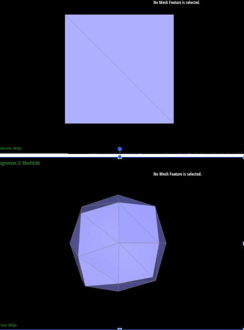
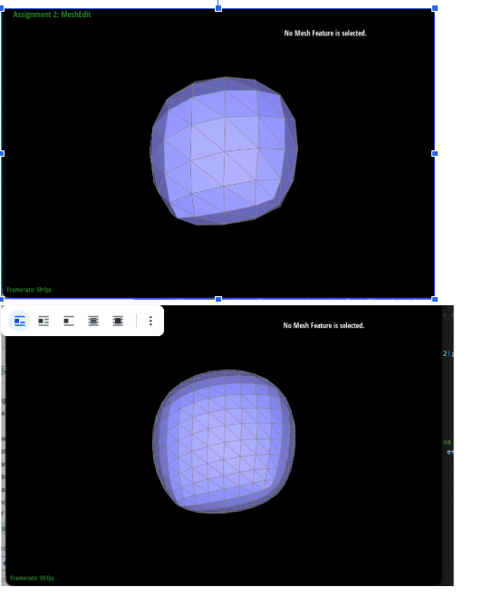
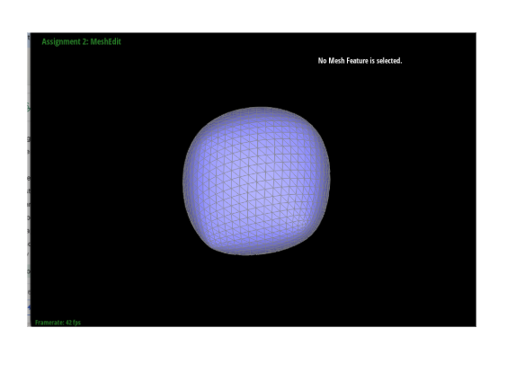